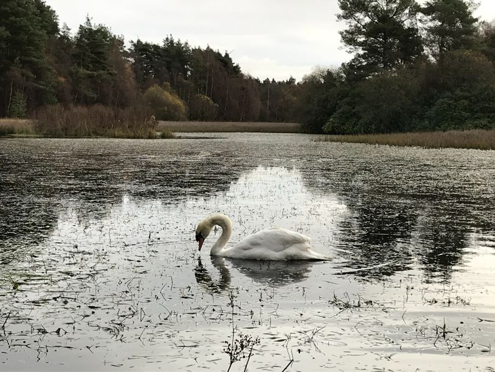
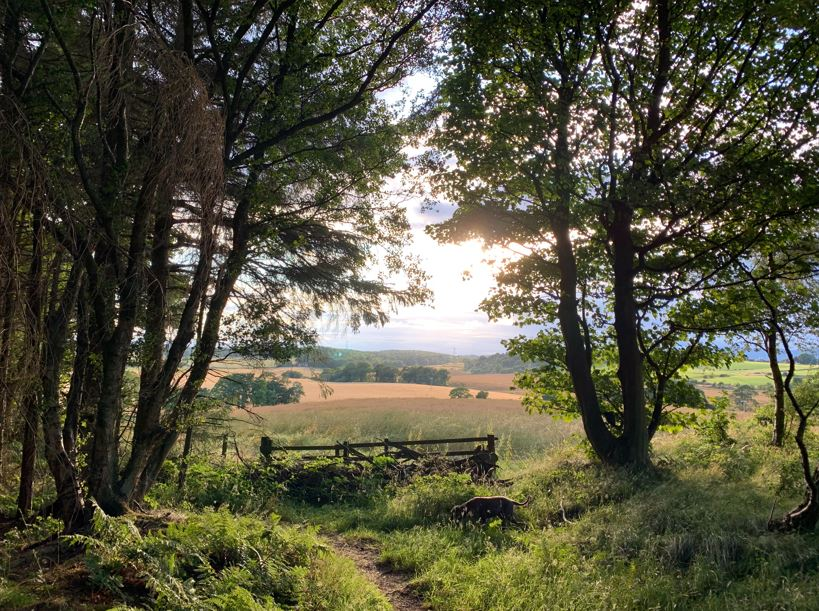

Dean
Dean wood is located one mile North of the village of Crossford, just outside Dunfermline. A small wood 1.0 by 0.4 miles in size it's suitable for short (but hilly) walks on natural paths.
Devilla
Devilla is located one mile East of Kincardine and has ample parking off the A985. A larger wood, 2.2 by 1.6 miles, Devilla has many forestry roads, connecting paths and bodies of water to explore.
Balgownie
Balgownie is located North West of the small village of Torryburn. A small wood 1.1 by 0.3 miles in size it's suitable for short walks on forestry roads and locally maintained paths.
Hover your mouse over the photographs to see more from West Fife Walks.

